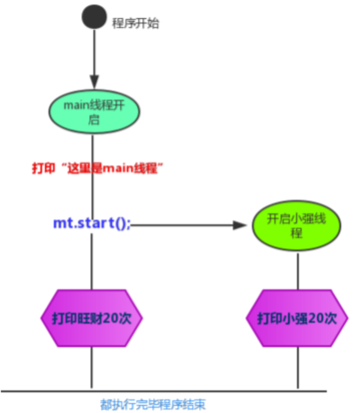
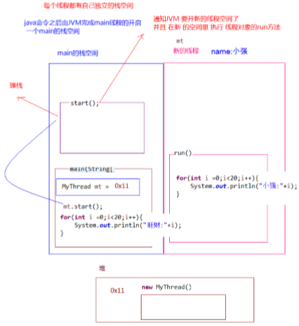

并发与并行
并发：指两个或多个事件在同一个时间段内发生。
并行：指两个或多个事件在同一时刻发生（同时发生）
在操作系统中，安装了多个程序，并发指的是在一段时间内宏观上有多个程序同时运行，这在单CPU系统中，每一时刻只能有一道程序执行，即微观上这些程序是分时的交替运行，只不过是给人的感觉是同时运行，那是因为分时交替运行的时间是非常短的、而在多个CPU系统中，则这些可以并发执行的程序便可以分配到多个处理器上（CPU），实现多任务并行执行， 即利用每个处理器来处理一个可以并发执行的程序，这样多个程序便可以同时执行。目前电脑市场上说的多核 CPU，便是多核处理器，核越多，并行处理的程序越多，能大大的提高电脑运行的效率。
线程调度
单核处理器的计算机肯定是不能并行的处理多个任务的，只能是多个任务在单个CPU上并发运行。同理,线程也是一样的，从宏观角度上理解线程是并行运行的，但是从微观角度上分析却是串行运行的，即一个线程一个线程的去运行，当系统只有一个CPU时，线程会以某种顺序执行多个线程，我们把这种情况称之为线程调度。
分类：
分时调度：所有线程轮流使用 CPU 的使用权，平均分配每个线程占用CPU的时间。
抢占式调度：优先让优先级高的线程使用 CPU，如果线程的优先级相同，那么会随机选择一个(线程随机性)，Java使用的为抢占式调度
抢占式调度详解
大部分操作系统都支持多进程并发运行，现在的操作系统几乎都支持同时运行多个程序。比如：现在我 们上课一边使用编辑器，一边使用录屏软件，同时还开着画图板，dos窗口等软件。此时，这些程序是 在同时运行，”感觉这些软件好像在同一时刻运行着“。 实际上，CPU(中央处理器)使用抢占式调度模式在多个线程间进行着高速的切换。对于CPU的一个核而 言，某个时刻，只能执行一个线程，而 CPU的在多个线程间切换速度相对我们的感觉要快，看上去就是 在同一时刻运行。 其实，多线程程序并不能提高程序的运行速度，但能够提高程序运行效率，让CPU的 使用率更高。
线程与进程
进程：是指一个内存中运行的应用程序，每个进程都有一个独立的内存空间，一个应用程序可以同时运行多个进程；进程也是程序的一次执行过程，是系统运行程序的基本单位；系统运行一个程序即是一个进程从创建、运行到消亡的过程。
线程：线程是进程中的一个执行单元，负责当前进程中程序的执行，一个进程中至少有一个线程。一个进程中是可以有多个线程的，这个应用程序也可以称之为多线程程序。
总之：一个程序运行后至少有一个进程，一个进程中可以包含多个线程
创建线程类
Java使用 java.lang.Thread 类代表线程，所有的线程对象都必须是Thread类或其子类的实例。每个线程的作用是 完成一定的任务，实际上就是执行一段程序流即一段顺序执行的代码。Java使用线程执行体来代表这段程序流。 Java中通过继承Thread类来创建并启动多线程的步骤如下：
1. 定义Thread类的子类，并重写该类的run()方法，该run()方法的方法体就代表了线程需要完成的任务,因此把 run()方法称为线程执行体。
2. 创建Thread子类的实例，即创建了线程对象
3. 调用线程对象的start()方法来启动该线程
1 package demosummary.thread;
2
3 public class MyThread extends Thread {
4 //定义线程名称的构造方法
5 public MyThread(String name) {
6 super(name);
7 }
8 //重写run方法
9 @Override
10 public void run() {
11 for (int i = 0; i < 5; i++) {
12 System.out.println(getName() + ":正在执行第" + i + "线程");
13 }
14 }
15
16 public static void main(String[] args) {
17 //创建线程对象
18 MyThread myThread = new MyThread("新的线程");
19 //开启线程
20 myThread.start();
21 //执行for循环
22 for (int i = 0; i < 5; i++) {
23 System.out.println("正在执行主线程:"+i);
24 }
25 }
26 }多线程原理
1 package demosummary.thread;
2
3 public class MyThread extends Thread {
4 //定义线程名称的构造方法
5 public MyThread(String name) {
6 super(name);
7 }
8 //重写run方法
9 @Override
10 public void run() {
11 for (int i = 0; i < 5; i++) {
12 System.out.println(getName() + ":正在执行第" + i + "线程");
13 }
14 }
15
16 public static void main(String[] args) {
17 System.out.println("这里是main线程");
18 //创建线程对象
19 MyThread myThread = new MyThread("小强");
20 //开启线程
21 myThread.start();
22 //执行for循环
23 for (int i = 0; i < 5; i++) {
24 System.out.println("旺财:"+i);
25 }
26 }
27 }
程序启动运行main时候，java虚拟机启动一个进程，主线程main在main()调用时候被创建。随着调用mt的对象的 start方法，另外一个新的线程也启动了，这样，整个应用就在多线程下运行，多线程执行时，在栈内存中，其实每一个执行线程都有一片自己所属的栈内存空间。进行方法的压栈和弹栈

Thread类
构造方法
public Thread() :分配一个新的线程对象。
public Thread(String name) :分配一个指定名字的新的线程对象。
public Thread(Runnable target) :分配一个带有指定目标新的线程对象。
public Thread(Runnable target,String name) :分配一个带有指定目标新的线程对象并指定名字。
常用方法
public String getName() :获取当前线程名称。
public void start() :导致此线程开始执行; Java虚拟机调用此线程的run方法。
public void run() :此线程要执行的任务在此处定义代码。
public static void sleep(long millis) :使当前正在执行的线程以指定的毫秒数暂停（暂时停止执行）。
public static Thread currentThread() :返回对当前正在执行的线程对象的引用。
创建线程方式有两种，一种是继承Thread类方式，一种是实现Runnable接口方式
创建线程（实现Runnable接口）
采用 java.lang.Runnable 也是非常常见的一种，我们只需要重写run方法即可
方法：
1. 定义Runnable接口的实现类，并重写该接口的run()方法，该run()方法的方法体同样是该线程的线程执行体。
2. 创建Runnable实现类的实例，并以此实例作为Thread的target来创建Thread对象，该Thread对象才是真正 的线程对象。
3. 调用线程对象的start()方法来启动线程。
1 package demosummary.thread;
2
3 public class MyRunnable implements Runnable {
4 //重写run方法
5 @Override
6 public void run() {
7 for (int i = 0; i < 5; i++) {
8 System.out.println(Thread.currentThread().getName() + "---" + i);
9 }
10 }
11
12 public static void main(String[] args) {
13 //创建类任务对象
14 MyRunnable myRunnable = new MyRunnable();
15 //创建线程
16 Thread thread = new Thread(myRunnable, "德玛");
17 //开启线程
18 thread.start();
19 for (int i = 0; i < 5; i++) {
20 System.out.println("皇子" + "---" + i);
21 }
22 }
23 } 通过实现Runnable接口，使得该类有了多线程类的特征。run()方法是多线程程序的一个执行目标。所有的多线程 代码都在run方法里面。Thread类实际上也是实现了Runnable接口的类。 在启动的多线程的时候，需要先通过Thread类的构造方法Thread(Runnable target) 构造出对象，然后调用Thread 对象的start()方法来运行多线程代码。
实际上所有的多线程代码都是通过运行Thread的start()方法来运行的。因此，不管是继承Thread类还是实现 Runnable接口来实现多线程，最终还是通过Thread的对象的API来控制线程的，熟悉Thread类的API是进行多线程 编程的基础
注意：Runnable对象仅仅作为Thread对象的target，Runnable实现类里包含的run()方法仅作为线程执行体。 而实际的线程对象依然是Thread实例，只是该Thread线程负责执行其target的run()方法
Thread和Runnable的区别
实现Runnable接口比继承Thread类所具有的优势：
1. 适合多个相同的程序代码的线程去共享同一个资源。
2. 可以避免java中的单继承的局限性。
3. 增加程序的健壮性，实现解耦操作，代码可以被多个线程共享，代码和线程独立。
4. 线程池只能放入实现Runable或Callable类线程，不能直接放入继承Thread的类。
注意：在java中，每次程序运行至少启动2个线程。一个是main线程，一个是垃圾收集线程。因为每当使用 java命令执行一个类的时候，实际上都会启动一个JVM，每一个JVM其实在就是在操作系统中启动了一个进程
匿名内部类方式实现线程的创建
使用线程的内匿名内部类方式，可以方便的实现每个线程执行不同的线程任务操作
1 package demosummary.thread;
2
3 public class InnerClassThread {
4 public static void main(String[] args) {
5 MyRunnable myRunnable = new MyRunnable(){
6 public void run(){
7 for (int i = 1; i <= 5; i++) {
8 System.out.println("德玛---"+i);
9 }
10 }
11 };
12 new Thread(myRunnable).start();
13 }
14 }